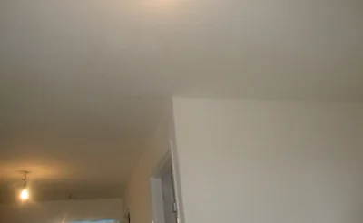

Home / Over ons
Eén ploeg, geen vreemden over de vloer.
Wie Bouw de Liman is en hoe het bedrijf werkt.

Over ons
Wie u binnenlaat, is wie het werk doet.
Bouw de Liman is een aannemer en klusbedrijf uit De Meern, met ruim 20 jaar ervaring in stucwerk, badkamers en renovatie. Het werk dat het bedrijf aanneemt, doet het zelf.
"Werkzaamheden door ons aangenomen worden volledig in eigen beheer uitgevoerd zodat u niet allerlei vreemden "over de vloer" krijgt."
GarantieMinimaal 5 jaarop het geleverde werk
GereedschapEigen materieel"u hoeft hier dus niet zelf iets te huren"
ErvaringRuim 20 jaarin stucwerk en badkamers
IngeschrevenKvK 54020573volgens de eigen site
Welke muur, welke ruimte?
Beschrijf uw klus en stuur er foto's bij. U krijgt een vrijblijvende offerte.